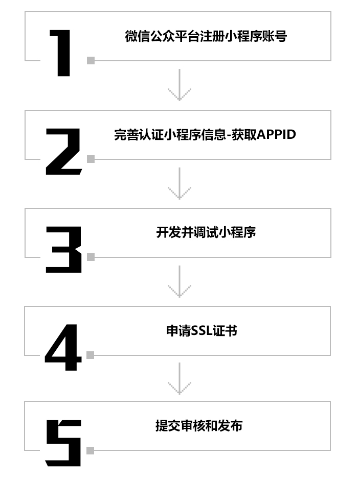

小程序开发
2019-01-29
什么是小程序
无需下载安装、触手可及、用完即走
无需下载安装即可使用的应用，它实现了应用触手可及的梦想。用户扫一扫或者搜一下即可打开应用。也体现了用完即走的理念，用户不用关心是否安装太多应用的问题。应用将无处不在，随时可用，但又无需安装卸载。
小程序特点
1、小程序是一款无需下载安装即可使用的应用，用户不必安装应用程序太多而担心。
2、小程序支持扫码，搜索名称，公众号关联，好友分享，历史浏览多个入口，一个公众号可关联多个小程序。
3、小程序可置于聊天信息顶部，用户在使用小程序过程中，可快速返回聊天界面，实现小程序与聊天的便捷切换。
4、小程序需启用https站点，相比http站点，这将使用户与服务器之间，收发的信息数据传输更加安全。
5、自带流量---以微信支撑，直接对微信的用户
6、精准定位---利用附近定位功能，精准推送，精准服务
小程序开发准备及流程

小程序应用场景
案例展示
功能介绍
团队优势
作为创新型科技企业，拥有一个充满朝气，高素质、年轻化、专业化的开发团队，为公司蓬勃发展提供源源不断的活力与动力。技术团队多年技术积累可以提供系统的解决方案、数据库分析等；移动互联网应用解决方案，擅长于Andriod、IOS程序开发；我们拥有完善、成熟的管理和标准化的开发流程，确保为客户提供高质量的服务和产品。遵循严格的安全标准，实施严密的安全措施，以保护客户的信息安全；

服务流程